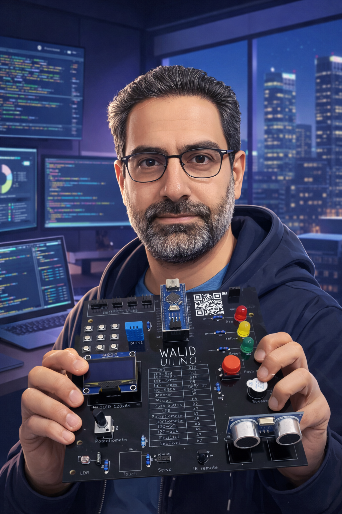
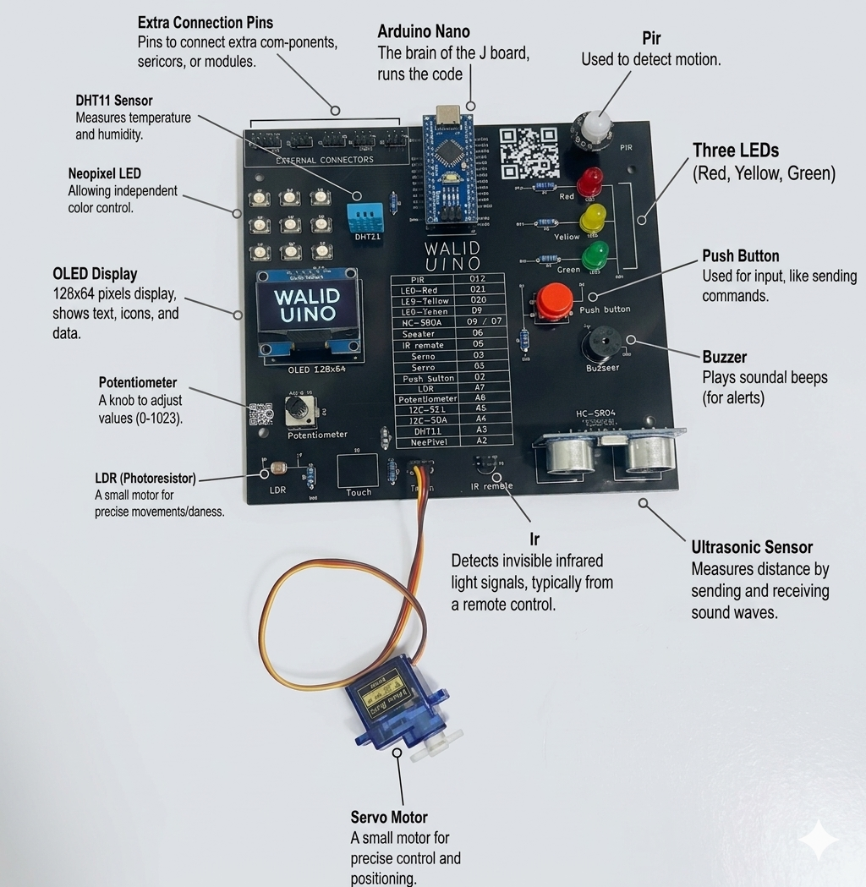

Plug-and-play learning
Designed for quick onboarding with fewer loose components and fewer setup errors.
Plug-and-play STEM board for future innovators

Waliduino helps students, teachers, trainers, and parents move from wiring confusion to real coding and hands-on results with one streamlined learning board.
Explore Waliduino
Waliduino combines the core building blocks beginners need for electronics, coding, sensing, and control on one compact educational board.

The integrated layout helps learners understand how sensors, outputs, display modules, and control elements connect inside a real embedded system without the usual wiring overhead.
Designed for quick onboarding with fewer loose components and fewer setup errors.
Uses a familiar ecosystem for accessible programming, examples, and long-term learning growth.
Includes integrated modules for hands-on lessons across sensors, outputs, and automation concepts.
OLED display, LEDs, buzzer, servo support, ultrasonic, PIR, DHT11, LDR, potentiometer, and more.
Ideal for workshops, courses, schools, and training centers that need efficient sessions with less troubleshooting.
A structured board layout reduces loose wiring errors and makes repeated classroom use more manageable.
Why Waliduino
Beginners often lose momentum before they build understanding. Traditional kits require extra parts, repeated setup, and fragile connections. Waliduino removes that friction by combining the core learning modules on one ready-to-code board.
Plug in the USB cable, open Arduino IDE, and start experimenting without a long setup process.
Sensors, outputs, and controls are already on the board, so learners can explore concepts without extra shopping or complex assembly.
Teachers and trainers spend less time fixing loose connections and more time guiding projects and understanding.
A clear starting point helps new learners build momentum, curiosity, and problem-solving habits early.
Learning Outcomes
Waliduino is built to turn abstract theory into visible results that learners can understand, test, and improve.
Learn inputs, outputs, signals, sensing, and the fundamentals behind modern embedded systems.
Practice variables, conditions, loops, timing, and structured thinking through hands-on coding tasks.
Explore how temperature, light, motion, and distance measurements can drive decisions in code.
Trigger LEDs, buzzers, displays, and servo-based actions to connect software with physical results.
Mini projects turn learning into progress, helping beginners solve problems and see tangible success early.
Who It Is For
A more approachable path into electronics, coding, Arduino, and embedded systems without getting stuck in setup friction.
A reliable classroom tool for workshops and courses where time, clarity, and repeatable demos matter.
An efficient way to run practical sessions with stronger structure, faster onboarding, and better student engagement.
A credible board for home learning and guided exploration that makes technical subjects feel more accessible.
Mini Projects
Waliduino supports practical demos and beginner automation ideas that help learners connect theory to visible outcomes.
Read temperature, light, and environmental values and display useful status information on screen.
Use the ultrasonic module to trigger LEDs or a buzzer when an object comes too close.
Create a simple detection system using the PIR sensor to introduce event-driven programming.
Control movement based on conditions and inputs to understand actuation and automation logic.
Combine multiple sensors and outputs to build practical flows that mirror real embedded system behavior.
Why It Is Different
About the Creator
Walid El Kassem is an electrical engineer with more than 15 years of experience in designing and programming electronic devices and embedded systems in Germany.
Through his YouTube channel @electronicsandcoding, he has helped a large community of Arabic-speaking learners take their first steps in Arduino, electronics, and programming. Waliduino reflects that teaching experience in a board designed to simplify the first learning journey without oversimplifying the concepts.
Start Your Journey
Whether you are launching a course, equipping a classroom, supporting a child’s first STEM project, or building a training program, Waliduino is designed to make the learning process clearer and more practical.